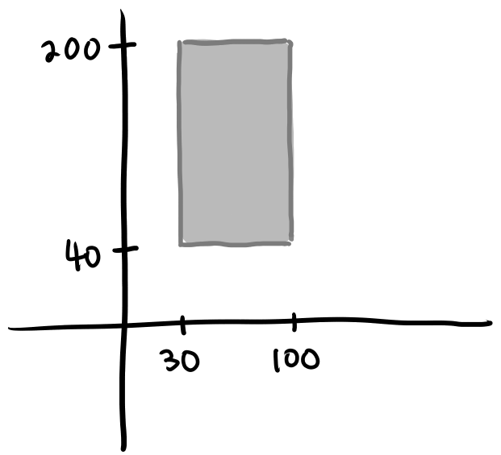
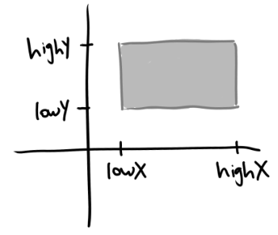
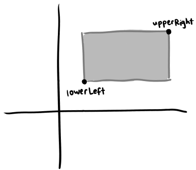
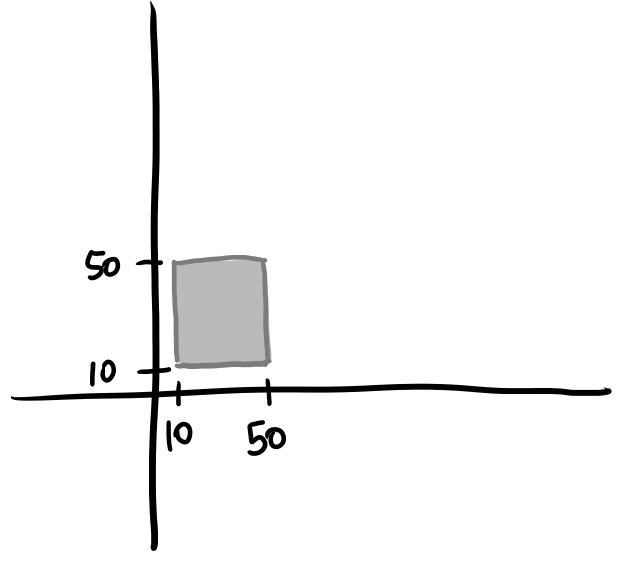
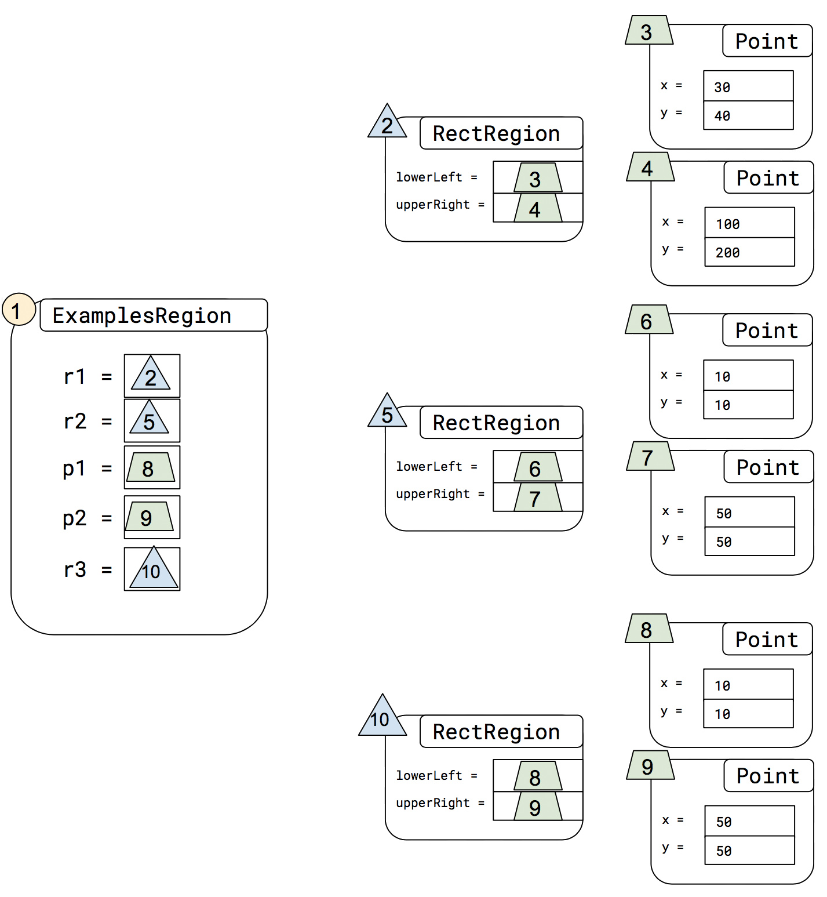
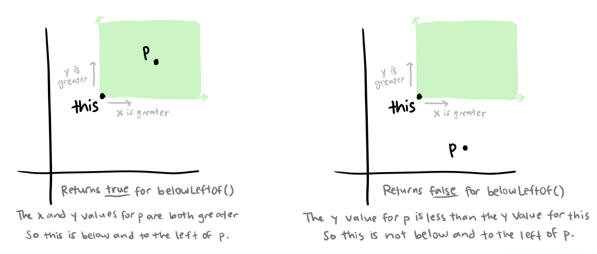

7.1 — Nested Data
A common idea in geometric or mapping applications is describing a region in 2D space. Let’s take rectangular regions as an example. Here’s a rectangular region whose lower-left corner is at (30, 40), and whose upper-right corner is at (100, 200):

How might we represent rectangles like this with a class? There are a few options: we could use the lower-left and upper-right corners, we could use all four corners, or we could use the lower-left corner with a width and a height. In the next few steps, we will look at the first option: using the lower-left and upper-right corners.
To represent the region, we might write a class like this:
class RectRegion {
int lowX;
int lowY;
int highX;
int highY;
// Constructor to be written
}Each of the 4 fields represents the boundary for 1 side of the rectangle.

Do Now! Which of the following coordinate pairs would represent the upper right corner of the rectangle?
In the previous example, the bottom left corner is represented by lowX and lowY , and the top right corner is represented by highX and highY. These pairings of fields are useful and meaningful together.
In particular, we’ve seen before that it’s useful to represent such pairs of x/y values in a Point class. So, another option is to use two Point fields, instead of four numeric fields:
class RectRegion {
Point lowerLeft;
Point upperRight;
//Constructor to be written
}
This choice is useful because it lets us re-use any methods that are already written in Point, and it also captures the relationship between the numbers. Remember that we had this definition of Point before:
class Point {
int x;
int y;
Point(int x, int y) {
this.x = x;
this.y = y;
}
}
Do Now! Write the constructor for this version of the RectRegion class. Then, select all of the options below that would successfully create the object and initialize its fields.
Let’s think about a few examples of RectRegions.

Since the two fields of RectRegion are both Points, we must pass references to Point objects when creating the RectRegion. If we want r1 to match the example in the picture from the first step (included again above), for example, we could write it as:
RectRegion r1 = new RectRegion(new Point(30, 40), new Point(100, 200));Let's choose this example for r2. Its lower left corner is at (10, 10) and its upper right corner is at (50, 50).

Do Now! Based on how r1 is written and on the information given for r2, fill in the blanks for r2 below.
Another way is that we could create the Points, and then use them in the creation of r2 by using field access:
Point p1 = new Point(10, 10);
Point p2 = new Point(50, 50);
RectRegion r2 = new RectRegion(p1, p2);Now, let’s put all these examples together (and rename the last one to r3), so we can see them all in one place:
class ExamplesRegion {
RectRegion r1 = new RectRegion(new Point(30, 40), new Point(100, 200));
RectRegion r2 = new RectRegion(new Point(10, 10), new Point(50, 50));
Point p1 = new Point(10, 10);
Point p2 = new Point(50, 50);
RectRegion r3 = new RectRegion(p1, p2);
}Do Now! How many total Point objects are created in the program above?
It’s useful to draw this out as a diagram as we have done before, because it will help us understand the relationships between the objects.
 |
There are a few interesting things about this diagram worth calling out:
|
This gives us a nice review of how objects and references are laid out after creation. Now we can go on to defining some methods on the new class we’ve defined.
Do Now! Use the diagram to answer the questions below.
A natural method to want for RectRegion is one that checks if a given Point is contained within that region. For example, the point (60, 60) is in the example rectangle region we gave in the first step, but it wouldn’t be contained in the second example rectangle. Also, the point (20, 20) is contained in the second but not the first. This gives us the header and examples; we’ll write the examples as tests, using the testing support:
class RectRegion {
// fields and constructor ...
/*
@param p The coordinates of a point to check for containment within this region
@return true if the coordinate is contained in the region, false otherwise
*/
boolean contains(Point p) {
}
}
class ExamplesRegion {
// Definitions of r1 through r3....
Point toTest1 = new Point(60, 60);
Point toTest2 = new Point(20, 20);
boolean testContains(Tester t) {
return t.checkExpect(this.r1.contains(this.toTest1), true) &&
t.checkExpect(this.r2.contains(this.toTest1), false) &&
t.checkExpect(this.r3.contains(this.toTest1), false) &&
t.checkExpect(this.r1.contains(this.toTest2), false) &&
t.checkExpect(this.r2.contains(this.toTest2), true) &&
t.checkExpect(this.r3.contains(this.toTest2), true);
}
}Next, we need to implement the method body for contains(). While there are several ways we could try to write it, this is a good opportunity to introduce a new strategy for working through a method implementation. It would be quite helpful here if Point had a method that could compare itself to another Point and check if both the x and y fields on the other point are greater than those of its own, and another method to tell if the x and y fields are less. These would let us check if the Point given to contains() is between the two Points referred to by lowerLeft and upperRight. To be concrete, if these methods were defined, we could implement contains() with something like:

Of course, the methods belowLeftOf() and aboveRightOf() don’t exist yet, so the method above will simply report an error. But that’s OK, as long as we go back and implement belowLeftOf() and aboveRightOf(). The implementation above gave us a wish list of methods that, if only we had them, would make our job in our current task much easier. This is a common pattern when writing a more complicated program, and is one strategy for decomposing a problem into smaller pieces.
Now we just need to go back and implement belowLeftOf() and aboveRightOf(). Let's start with belowLeftOf(). The image from the previous step is included here for reference.

Do Now! Match the code snippet with its corresponding blank. The code with the blanks has been copied below.
boolean belowLeftOf(Point p) {
return __BLANK1__ > __BLANK2__ && __BLANK3__ > __BLANK4__;
}Next, we need to implement aboveRightOf().
Do Now! Fill in the blanks to complete the method.
Now that we have implemented the belowLeftOf() and aboveRightOf() methods, we can run the code from before and make sure that the contains() method properly returns true when the Point is contained within the region.
Do Now! Paste the implementations of belowLeftOf() and aboveRightOf() in the Point class. Run to code and ensure that contains() works as expected.